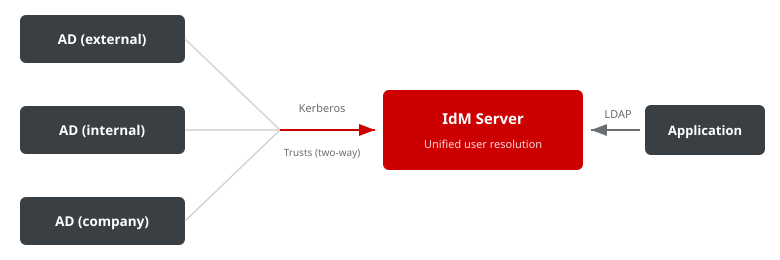
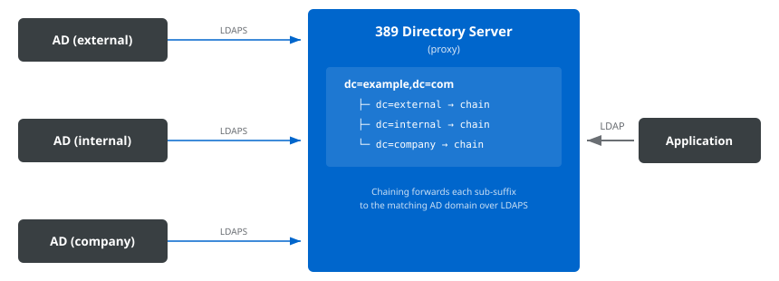

Ansible playbooks for setting up an LDAP proxy that fronts multiple Active Directory domains, providing a single authentication endpoint for LDAP-capable applications.
Select the approach that fits your environment, then follow the steps.

Creates DNS forward zones, disables DNSSEC validation, and establishes two-way Kerberos trusts from IdM to all three AD domains.
ansible-playbook -i inventory idm/establish-ad-trust.yml
Tests proxy connectivity: compat tree searches, SSSD resolution for all users, and Kerberos cross-realm authentication.
# Full proxy test ansible-playbook -i inventory idm/test-proxy.yml # Trust infrastructure only ansible-playbook -i inventory idm/verify-trust.yml
| Parameter | Value |
|---|---|
| LDAP Server URI | ldap://<idm-server-fqdn> |
| Bind DN | uid=admin,cn=users,cn=accounts,dc=rh-lab,dc=labs |
| User Search Base | cn=users,cn=compat,dc=rh-lab,dc=labs |
| User Search Scope | SUBTREE |
| User Search Filter | (uid=%(user)s) |
Removes all three trusts and their DNS forward zones from IdM.
ansible-playbook -i inventory cleanup.yml

Creates the svc-ldapproxy service account on each AD domain for the chaining bind.
ansible-playbook -i inventory ad/create-proxy-account.yml
Full proxy lifecycle: creates the slapd-adproxy instance on port 3911, configures certificates, creates entries, and sets up chaining to each AD domain.
ansible-playbook -i inventory ds/deploy-proxy-instance.yml
Cross-domain search, service account bind verification, and wrong password rejection test.
ansible-playbook -i inventory ds/test-proxy.yml
| Parameter | Value |
|---|---|
| LDAP Server URI | ldap://<ds-proxy-fqdn>:3911 |
| Bind DN | uid=svc-cm,dc=example,dc=com |
| Bind Password | SvcCmPass123! |
| User Search Base | dc=example,dc=com |
| User Search Scope | SUBTREE |
| User Search Filter | (userPrincipalName=%(user)s) |
| Group Type | MemberDNGroupType |
| Connection Options | OPT_REFERRALS: 0 |
Using userPrincipalName (e.g., jdoe@external.example.com) lets users specify which domain they are authenticating against when the same sAMAccountName exists in multiple domains.
If LDAPS is not working on a domain controller, run the diagnostic playbook. It checks boot time, AD DS certificate events (ID 1220), and certificate details.
ansible-playbook -i inventory ad/diagnose-ldaps.yml
Removes the 389 DS instance and the svc-ldapproxy accounts from each AD domain.
ansible-playbook -i inventory cleanup.yml
What you need before deploying.
Install required collections before running any playbooks.
ansible-galaxy collection install \ -r common/requirements.yml
Prepare a sysprepped base image, then clone it for each DC.
ansible-playbook -i <inventory> \ common/sysprep/generalize-base-image.yml
Common resources used by both approaches.
| Directory | Contents |
|---|---|
common/tasks/ | Shared Ansible task files for DC deployment, user/group creation, and /etc/hosts management |
common/sysprep/ | Windows Server base image preparation (sysprep + unattend) |
common/requirements.yml | Ansible collection dependencies |